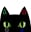
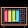

CineMultimediaFlix
Portal orientado al entretenimiento digital que reúne estrenos de cine, series actuales y contenido variado en alta definición con múltiples opciones de reproducción online.
Visitar CineMultimediaFlixDirectorio especializado de plataformas de cine, series, animación y clásicos retro.
Portal orientado al entretenimiento digital que reúne estrenos de cine, series actuales y contenido variado en alta definición con múltiples opciones de reproducción online.
Visitar CineMultimediaFlix Clásicos Animados
Clásicos Animados
Sitio dedicado a la nostalgia de la animación, recopilando dibujos animados antiguos, largometrajes clásicos y caricaturas de décadas pasadas con doblaje original.
Visitar Clásicos Animados
gatonplayseriesPlataforma enfocada directamente en los fanáticos de las series de televisión, ofreciendo temporadas organizadas y capítulos al día para ver de forma directa.
Visitar gatonplayseriesHistórica comunidad de intercambio donde los usuarios comparten enlaces de descarga directa para películas, sagas completas, animes y material de archivo difícil de hallar.
Visitar Identi
MundoToonEspacio especializado en series animadas, cartoons modernos de canales populares y clásicos infantiles organizados por temporadas completas en audio latino.
Visitar MundoToonArchivo audiovisual pensado para revivir producciones televisivas de los años 70, 80 y 90 que marcaron época, enfocado en series clásicas de acción, comedia y drama.
Visitar seriesretroPlataforma centrada en películas, animes y series dobladas al español latino, destacando por su rapidez en la actualización de estrenos recientes.
Visitar SoloLatino Tito Series
Tito Series
Sitio de recopilación de series populares, telenovelas y producciones televisivas con enlaces y reproductores integrados para seguir capítulos desde el navegador.
Visitar Tito SeriesUno de los referentes más conocidos de la web para ver estrenos de cartelera, películas taquilleras y series internacionales online de forma rápida.
Visitar CUEVANA